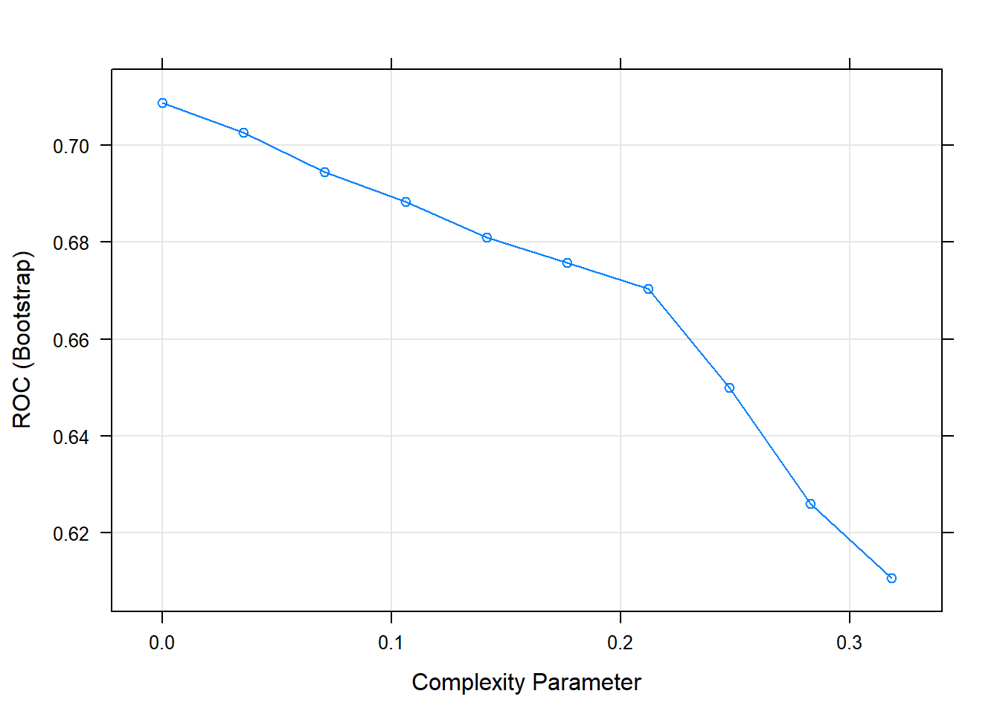
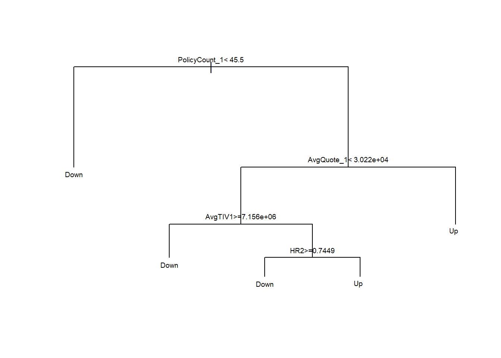
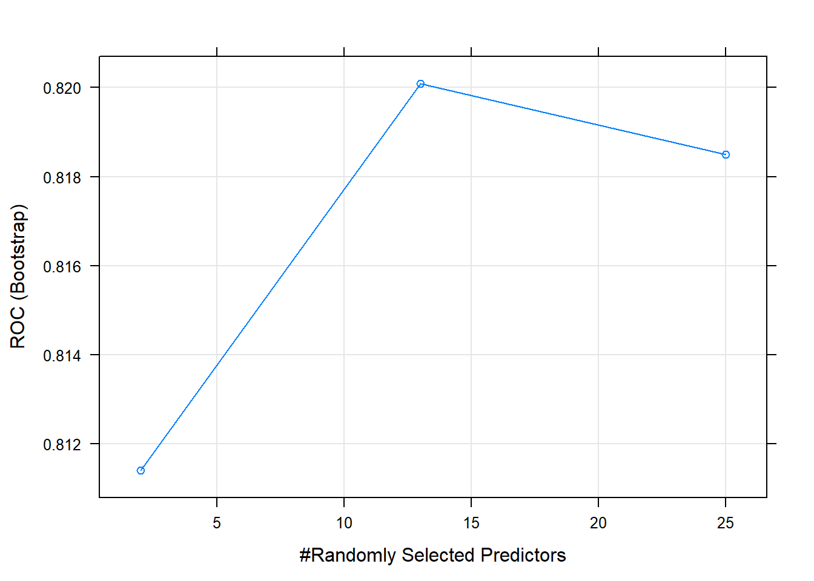
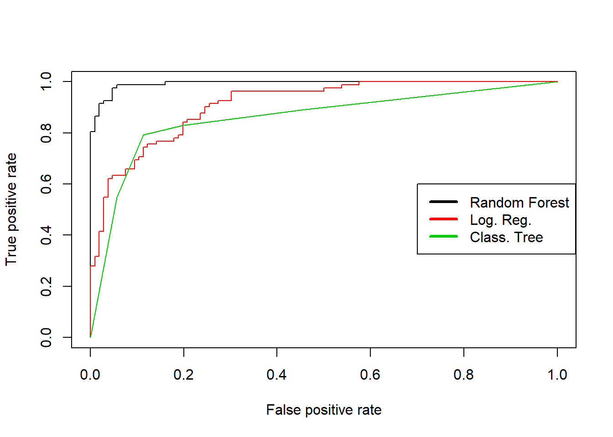
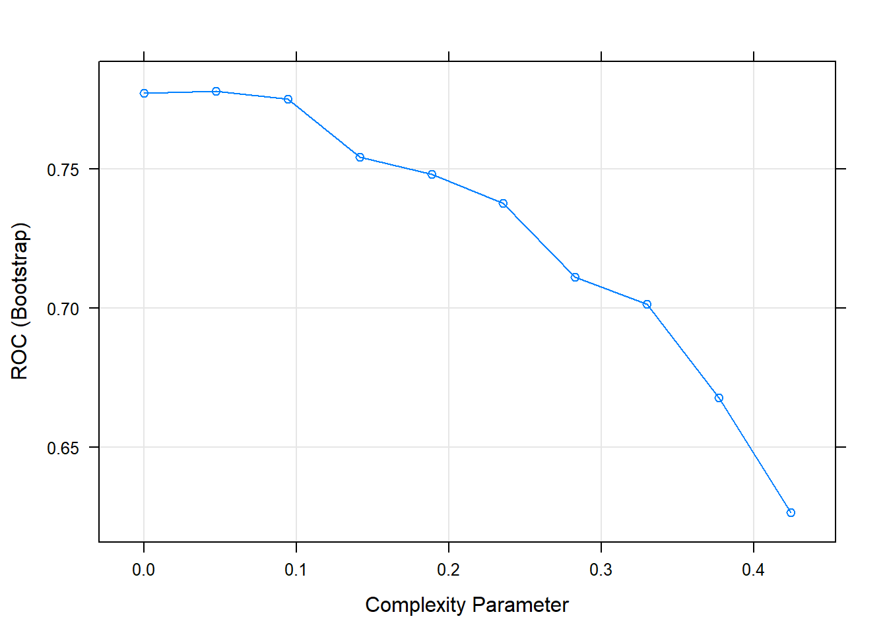
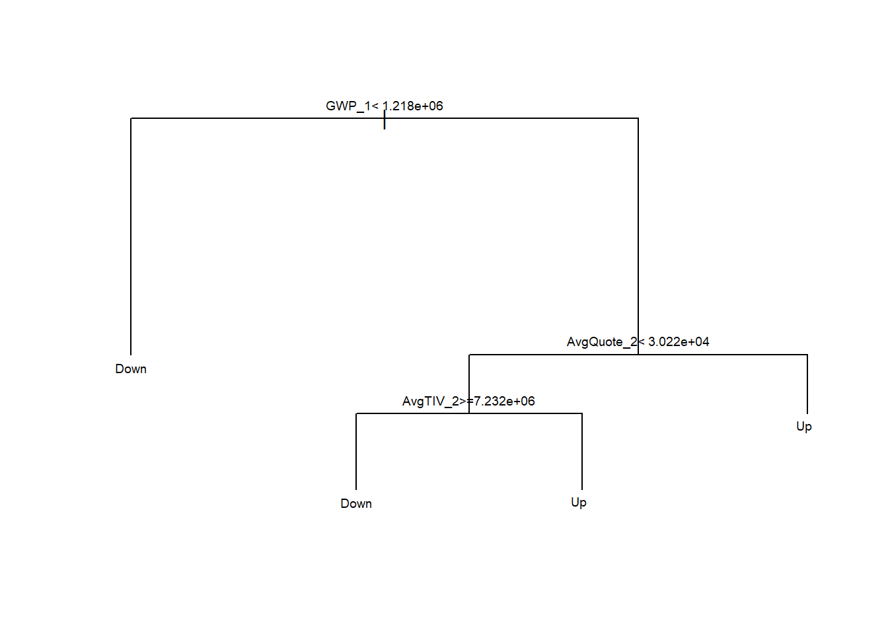
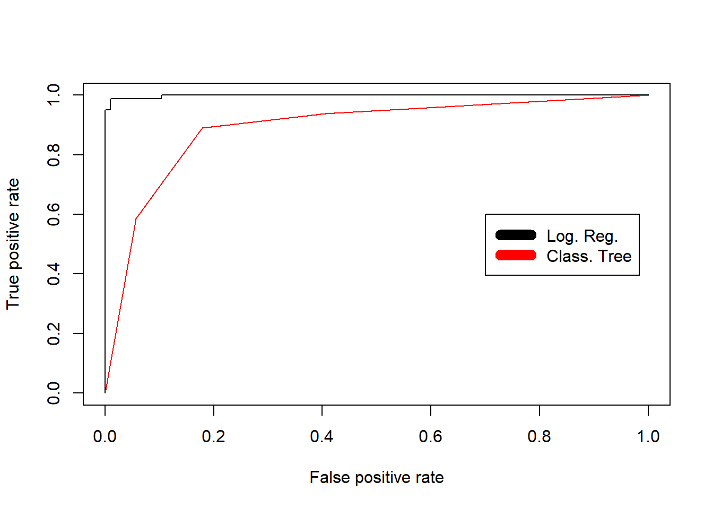

GWP 2018 Prediction
For prediction of Gross Written Premium for 2019 we need to first predict for 2018 to test our model accuracy. Since we are primarily interested in determing whether GWP increases or decreases for the upcoming year for each broker, a new column called "Up_Down" can be created that compares GWP 2018 values to GWP 2017 and labels the values as "Up" if GWP for 2018 exceeds 2017 and "Down" if GWP for 2018 is lower than 2017. The response variable is a factor (character variable), we have to use machine learning algorithms such as classification trees, logistic regression, etc. The new dataframe: “myBroker_exp_DF” consists of all variables from 2015 to 2017. Variables from years 2013 and 2014 are excluded, and the new variable: "Up_Down" is added.
# Prediction of GWP2018
set.seed(12345)
Up_Down <- character(length(myBDF$GWP_2018))
Up_Down[myBDF$GWP_2017 < myBDF$GWP_2018] <- "Up"
Up_Down[myBDF$GWP_2017 >= myBDF$GWP_2018] <- "Down"
myBroker_exp_DF <- myBDF %>%
dplyr::mutate(quote_ratio2015 = QuoteCount_2015/ Submissions_2015,
quote_ratio2016 = QuoteCount_2016/ Submissions_2016,
quote_ratio2017 = QuoteCount_2017/ Submissions_2017,
hit_ratio15 = PolicyCount_2015/ QuoteCount_2015,
hit_ratio16 = PolicyCount_2016/ QuoteCount_2016,
hit_ratio17 = PolicyCount_2017/ QuoteCount_2017,
success_ratio15_17 = PolicyCount_2015+ PolicyCount_2016 + PolicyCount_2017/
Submissions_2015 + Submissions_2016 + Submissions_2017,
Up_Down) %>%
select(-GWP_2018, -Submissions_2018, -QuoteCount_2018, -PolicyCount_2018, -AvgQuote_2018, -AvgTIV_2018,
-Submissions_2014, -QuoteCount_2013, -QuoteCount_2014, -AvgQuote_2013, -AvgQuote_2014)
myBroker_exp_DF$Up_Down <- as.factor(myBroker_exp_DF$Up_Down)
myBrokerDF <- myBroker_exp_DF
colnames(myBrokerDF) <- c("Submissions_3", "Submissions_2", "Submissions_1",
"QuoteCount_3","QuoteCount_2", "QuoteCount_1", "AvgQuote_3", "AvgQuote_2",
"AvgQuote_1", "PolicyCount_3", "PolicyCount_2", "PolicyCount_1",
"GWP_3", "GWP_2", "GWP_1", "AvgTIV_3", "AvgTIV_2",
"AvgTIV1", "QR3", "QR2", "QR1", "HR3", "HR2", "HR1","SR","Up_Down")
We then proceed to partition the dataset into test (20%) and training (80%) using the function “createDataPartition” (found in the "caret" package).
# Partitioning into training and test, training = 80% as the dataset is small
trainRows <- createDataPartition(Up_Down,
p = 0.8,
list=FALSE)
BrokTrainData18 <- myBrokerDF[trainRows,]
BrokTestData18 <- myBrokerDF[-trainRows,]
table(Up_Down)
## Up_Down
## Down Up
## 106 82
Classification Trees
For the classification tree model, we use all variables in the training set to train the model. To train the model, we use the train function and save the results in "“myRparttune”, apply the “rpart” method, and set the metric to “ROC” to ensure the selection of best model. For tuning the model we need to include; tunelength = 10, default being 3, and split criteria set to “information gain”, default is Gini Index. The train function provided the best model at complexity parameter = 0.07.
# Rpart
# increasing tune length & split type as 'Entropy'
splitEntropy = list(split = c("information"))
myRparttune <- train(Up_Down ~ .,
data=BrokTrainData18,
method="rpart",
metric="ROC",
tuneLength = 10,
parms = splitEntropy,
trControl=trainControl(classProbs=TRUE,
summaryFunction=twoClassSummary))
plot(myRparttune)

myRparttune$results
## cp ROC Sens Spec ROCSD SensSD SpecSD
## 1 0.00000000 0.7087193 0.7030466 0.6596959 0.06744125 0.1134558 0.1158620
## 2 0.03535354 0.7025369 0.7053459 0.6661077 0.07400825 0.1096479 0.1015546
## 3 0.07070707 0.6943522 0.7022634 0.6420807 0.07094654 0.1119068 0.1225912
## 4 0.10606061 0.6882251 0.6545418 0.6915282 0.07224751 0.1549664 0.1601590
## 5 0.14141414 0.6809741 0.6552857 0.6663226 0.08001456 0.1753808 0.1887295
## 6 0.17676768 0.6757820 0.6695795 0.6547226 0.07962344 0.1698370 0.2027911
## 7 0.21212121 0.6703244 0.6802461 0.6307015 0.08585172 0.1801601 0.2446506
## 8 0.24747475 0.6499109 0.6265344 0.6665035 0.08323140 0.1763311 0.2818400
## 9 0.28282828 0.6260870 0.6584177 0.5937563 0.09149758 0.1980458 0.3535952
## 10 0.31818182 0.6106691 0.6954677 0.5258706 0.09481431 0.2145107 0.3797248
myRparttune$bestTune # best model with cp
## cp
## 1 0
myRparttune$finalModel
## n= 151
##
## node), split, n, loss, yval, (yprob)
## * denotes terminal node
##
## 1) root 151 66 Down (0.56291391 0.43708609)
## 2) PolicyCount_1< 45.5 52 6 Down (0.88461538 0.11538462) *
## 3) PolicyCount_1>=45.5 99 39 Up (0.39393939 0.60606061)
## 6) AvgQuote_1< 30219.13 58 23 Down (0.60344828 0.39655172)
## 12) AvgTIV1>=7156371 29 5 Down (0.82758621 0.17241379) *
## 13) AvgTIV1< 7156371 29 11 Up (0.37931034 0.62068966)
## 26) HR2>=0.7449327 10 3 Down (0.70000000 0.30000000) *
## 27) HR2< 0.7449327 19 4 Up (0.21052632 0.78947368) *
## 7) AvgQuote_1>=30219.13 41 4 Up (0.09756098 0.90243902) *
print(myRparttune)
## CART
##
## 151 samples
## 25 predictor
## 2 classes: 'Down', 'Up'
##
## No pre-processing
## Resampling: Bootstrapped (25 reps)
## Summary of sample sizes: 151, 151, 151, 151, 151, 151, ...
## Resampling results across tuning parameters:
##
## cp ROC Sens Spec
## 0.00000000 0.7087193 0.7030466 0.6596959
## 0.03535354 0.7025369 0.7053459 0.6661077
## 0.07070707 0.6943522 0.7022634 0.6420807
## 0.10606061 0.6882251 0.6545418 0.6915282
## 0.14141414 0.6809741 0.6552857 0.6663226
## 0.17676768 0.6757820 0.6695795 0.6547226
## 0.21212121 0.6703244 0.6802461 0.6307015
## 0.24747475 0.6499109 0.6265344 0.6665035
## 0.28282828 0.6260870 0.6584177 0.5937563
## 0.31818182 0.6106691 0.6954677 0.5258706
##
## ROC was used to select the optimal model using the largest value.
## The final value used for the model was cp = 0.
par(xpd = NA)
plot(myRparttune$finalModel)
text(myRparttune$finalModel, cex=.6)

myRparttunepredtest <- predict(myRparttune, newdata=BrokTestData18)
(myRparttunedConfusion <- table(BrokTestData18$Up_Down, myRparttunepredtest))
## myRparttunepredtest
## Down Up
## Down 17 4
## Up 3 13
1-sum(diag(myRparttunedConfusion))/sum(myRparttunedConfusion)
## [1] 0.1891892
myRparttunedpred <- predict(myRparttune, newdata=myBrokerDF)
(myRparttunedCM <- table(myBrokerDF$Up_Down, myRparttunedpred))
## myRparttunedpred
## Down Up
## Down 94 12
## Up 17 65
1-sum(diag(myRparttunedCM))/sum(myRparttunedCM)
## [1] 0.1542553
myRparttunePredict <- predict(myRparttune, newdata=myBrokerDF, type="prob")
myRparttunePred <- prediction(myRparttunePredict[,2],
myBrokerDF$Up_Down,
label.ordering=c( "Down", "Up"))
myRparttunePerf <- performance(myRparttunePred, "tpr", "fpr")
performance(myRparttunePred, "auc")
## An object of class "performance"
## Slot "x.name":
## [1] "None"
##
## Slot "y.name":
## [1] "Area under the ROC curve"
##
## Slot "alpha.name":
## [1] "none"
##
## Slot "x.values":
## list()
##
## Slot "y.values":
## [[1]]
## [1] 0.8584906
##
##
## Slot "alpha.values":
## list()
The misclassification rate for the classification tree model when validating on the test data set (myRparttunepredtest) was 24.32 %. The accuracy rate for the model was 75.68%.
The matrix represents a total of 13 observations correctly classified as “Up” and 15 observations correctly classified as “Down”.
The misclassification rate for classification tree model when validated using the entire data set (myRparttunedpred) is 18.62 %. The accuracy rate for this model is 81.38%. The matrix shows a total of 68 observations correctly classified as “Up” and 85 observations correctly classified as “Down”.
The variables that appear to be important for predicting the outcome for the gross written premium prediction for 2018 are Policy Counts, Average Quote, and Average Total Insured Value.
Logistic Regression
The logistic regression model using the training dataset (BrokTrainData18): Weights are not assigned as there is “little” to “no” class imbalance (Up: 82, Dow: 106). To train the model, we use the train function (and store results in “myLRtrain”), apply the “glm” method and set the metric to “ROC”.
# Logistic regression
#The tuneLength parameter is used to determine the total number of combinations that will be evaluated
myLRtrain <- train(Up_Down ~ .,
data=BrokTrainData18,
method="glm",
metric="ROC",
tuneLength = 10,
trControl=trainControl(classProbs=TRUE,
summaryFunction=twoClassSummary))
myLRtrain$results
## parameter ROC Sens Spec ROCSD SensSD SpecSD
## 1 none 0.7701864 0.7088419 0.6758822 0.06620168 0.09827614 0.1016044
myLRtrain$bestTune
## parameter
## 1 none
myLRtrain$finalModel
##
## Call: NULL
##
## Coefficients:
## (Intercept) Submissions_3 Submissions_2 Submissions_1 QuoteCount_3
## 9.596e-01 -5.909e-03 -3.232e+00 -3.234e+00 8.027e-03
## QuoteCount_2 QuoteCount_1 AvgQuote_3 AvgQuote_2 AvgQuote_1
## -1.148e-02 -5.399e-03 3.276e-05 -1.346e-05 2.173e-04
## PolicyCount_3 PolicyCount_2 PolicyCount_1 GWP_3 GWP_2
## -3.280e+00 -3.243e+00 7.454e-02 -6.097e-07 -6.275e-07
## GWP_1 AvgTIV_3 AvgTIV_2 AvgTIV1 QR3
## 4.961e-07 8.505e-07 -1.898e-07 -1.563e-06 -4.295e+00
## QR2 QR1 HR3 HR2 HR1
## 1.361e+00 2.944e-01 -7.731e-01 -1.279e-01 -1.896e+00
## SR
## 3.239e+00
##
## Degrees of Freedom: 150 Total (i.e. Null); 125 Residual
## Null Deviance: 206.9
## Residual Deviance: 95.49 AIC: 147.5
print(myLRtrain)
## Generalized Linear Model
##
## 151 samples
## 25 predictor
## 2 classes: 'Down', 'Up'
##
## No pre-processing
## Resampling: Bootstrapped (25 reps)
## Summary of sample sizes: 151, 151, 151, 151, 151, 151, ...
## Resampling results:
##
## ROC Sens Spec
## 0.7701864 0.7088419 0.6758822
myLRtraintest <- predict(myLRtrain, newdata=BrokTestData18)
(myLRtrainConfusion <- table(BrokTestData18$Up_Down, myLRtraintest))
## myLRtraintest
## Down Up
## Down 15 6
## Up 3 13
1-sum(diag(myLRtrainConfusion))/sum(myLRtrainConfusion)
## [1] 0.2432432
myLRtrainpred <- predict(myLRtrain, newdata=myBrokerDF)
myLRtrainprob <- predict(myLRtrain, newdata=myBrokerDF, type = "prob")[,2]
(myLRtrainCM <- table(myBrokerDF$Up_Down, myLRtrainpred))
## myLRtrainpred
## Down Up
## Down 87 19
## Up 18 64
1-sum(diag(myLRtrainCM))/sum(myLRtrainCM)
## [1] 0.1968085
# ROC for Logistic regression
myLRPredict <- predict(myLRtrain, newdata=myBrokerDF, type="prob")
myLRPred <- prediction(myLRPredict[,2],
myBrokerDF$Up_Down,
label.ordering=c( "Down", "Up"))
myLRPerf <- performance(myLRPred, "tpr", "fpr")
performance(myLRPred, "auc")
## An object of class "performance"
## Slot "x.name":
## [1] "None"
##
## Slot "y.name":
## [1] "Area under the ROC curve"
##
## Slot "alpha.name":
## [1] "none"
##
## Slot "x.values":
## list()
##
## Slot "y.values":
## [[1]]
## [1] 0.9111827
##
##
## Slot "alpha.values":
## list()
The misclassification rate for the logistic regression model on the test set (myLRtraintest) is 24.32%.
The accuracy rate for the model is 75.68%. The misclassification rate for the logistic regression model when validating the entire data set (myLRtrainpred) is 19.68%.
The accuracy rate for the model is 80.32%. The confusion matrix shows that 64 observations were correctly classified as “Up” and 87 correctly classified as “Down”.
The features that were found to be most important for prediction are average quote counts for 2015, average total insured value for 2015 and 2017, hit ratio for 2015.
Random Forest
To train the model using Random Forest algorithm, the method specified as “rf”, the metric set to “ROC”,
and the number of trees set to 1500 (as overfitting is not a concern with Random Forest).
The response column “Up_Down” needs to be set to “factor” before proceeding.
We can evaluate our model first before tuning (with 500 trees) and then with 1500 trees.
# Random Forest with cross validation & tuning the no. of trees
# (as overfitting is not a concern with Random Forest)
no_trees <- 1500 # no. of trees
myRFtune <- train(Up_Down ~ .,
data=BrokTrainData18,
method="rf",
metric="ROC",
ntree = no_trees,
trControl=trainControl(classProbs=TRUE,
summaryFunction=twoClassSummary))
plot(myRFtune)

myRFtune$results
## mtry ROC Sens Spec ROCSD SensSD SpecSD
## 1 2 0.8114030 0.7398858 0.6991620 0.04372114 0.09167648 0.1392029
## 2 13 0.8200906 0.7570010 0.7278308 0.04157764 0.08786922 0.1086326
## 3 25 0.8185020 0.7615775 0.7062938 0.04014404 0.09534216 0.1127736
myRFtune$bestTune
## mtry
## 2 13
myRFtune$finalModel
##
## Call:
## randomForest(x = x, y = y, ntree = ..1, mtry = param$mtry)
## Type of random forest: classification
## Number of trees: 1500
## No. of variables tried at each split: 13
##
## OOB estimate of error rate: 26.49%
## Confusion matrix:
## Down Up class.error
## Down 67 18 0.2117647
## Up 22 44 0.3333333
myRFtunedpredtest <- predict(myRFtune, newdata=BrokTestData18)
(myRFtunedConfusion <- table(BrokTestData18$Up_Down, myRFtunedpredtest))
## myRFtunedpredtest
## Down Up
## Down 16 5
## Up 5 11
1-sum(diag(myRFtunedConfusion))/sum(myRFtunedConfusion)
## [1] 0.2702703
myRFtunedpred <- predict(myRFtune, newdata=myBrokerDF)
(myRFtunedConfusion <- table(myBrokerDF$Up_Down, myRFtunedpred))
## myRFtunedpred
## Down Up
## Down 101 5
## Up 5 77
plot(myRFtune)

1-sum(diag(myRFtunedConfusion))/sum(myRFtunedConfusion)
## [1] 0.05319149
The misclassification rate for the random forest model when validating using the test set (myRFtunedpredtest) is 27.03%.
The accuracy rate for the model was 72.97%.
The misclassification rate for the random forest model when validating the entire data set (myLRtrainpred) is 5.31%.
The accuracy rate for the model was 94.69%.
The OOB estimate error rate for random forest, with default 500 as number of trees was 30.46%.
The OOB estimate error rate for random forest, with default 1500 as number of trees was 27.81%
myRFtunePredict <- predict(myRFtune, newdata=myBrokerDF, type="prob")
myRFtunePred <- prediction(myRFtunePredict[,2],
myBrokerDF$Up_Down,
label.ordering=c( "Down", "Up"))
myRFtunePerf <- performance(myRFtunePred, "tpr", "fpr")
# Plotting ROC curves
plot(myRFtunePerf, col=1)
plot(myLRPerf, col=2, add=TRUE)
plot(myRparttunePerf, col=3, add=TRUE)
legend(0.7, 0.6, c("Random Forest", "Log. Reg.", "Class. Tree"), col=1:3, lwd=3)

# Calculating AUC for all models
performance(myRparttunePred, "auc")
## An object of class "performance"
## Slot "x.name":
## [1] "None"
##
## Slot "y.name":
## [1] "Area under the ROC curve"
##
## Slot "alpha.name":
## [1] "none"
##
## Slot "x.values":
## list()
##
## Slot "y.values":
## [[1]]
## [1] 0.8584906
##
##
## Slot "alpha.values":
## list()
performance(myLRPred, "auc")
## An object of class "performance"
## Slot "x.name":
## [1] "None"
##
## Slot "y.name":
## [1] "Area under the ROC curve"
##
## Slot "alpha.name":
## [1] "none"
##
## Slot "x.values":
## list()
##
## Slot "y.values":
## [[1]]
## [1] 0.9111827
##
##
## Slot "alpha.values":
## list()
performance(myRFtunePred, "auc")
## An object of class "performance"
## Slot "x.name":
## [1] "None"
##
## Slot "y.name":
## [1] "Area under the ROC curve"
##
## Slot "alpha.name":
## [1] "none"
##
## Slot "x.values":
## list()
##
## Slot "y.values":
## [[1]]
## [1] 0.9932121
##
##
## Slot "alpha.values":
## list()
Results: GWP 2019
Performance for the classification tree model, the logistic regression model and random forest model are represented by the green (Class Tree), red (Log Reg) and the black (Random Forest) curves. The AUC for the Classification Trees is 84.92, the AUC for the Logistic Regression is 91.12 and the AUC for Random Forest is 99.33
GWP 2019 Prediction
For prediction of Gross Written Premium for 2019, we consider the two classification methods that yielded best results from the GWP 2018 prediction: classification trees and logistic regression. The variable previously used for the Gross Written Premium prediction for 2018: “Up_Down”, can be used for the prediction of GWP 2019. Next steps: First, we edit the data frame “myBroker_exp_DF” to exclude all variables recorded for 2015. Second, all 2018 variables have to be included into the data frame (2016 to 2018) and third, the new data frame “myBrokerDF” needs to be rerun to refresh the new variables. Further on we will follow all the steps that were previously done using the classification tree and logistic regression method to determine the GWP 2018 prediction, to predict the Gross Written Premium prediction for 2019.
myBroker_exp_DF <- myBDF %>%
dplyr::mutate(quote_ratio2016 = QuoteCount_2016/ Submissions_2016,
quote_ratio2017 = QuoteCount_2017/ Submissions_2017,
quote_ratio2018 = QuoteCount_2018/ Submissions_2018,
hit_ratio16 = PolicyCount_2016/ QuoteCount_2016,
hit_ratio17 = PolicyCount_2017/ QuoteCount_2017,
hit_ratio18 = PolicyCount_2018/ QuoteCount_2018,
success_ratio16_18 = PolicyCount_2016 + PolicyCount_2017 + PolicyCount_2018/
Submissions_2016 + Submissions_2017 + Submissions_2018, Up_Down) %>%
select(-Submissions_2015, -QuoteCount_2015, -PolicyCount_2015, -AvgTIV_2015, -AvgQuote_2015,
-GWP_2015, -Submissions_2014, -QuoteCount_2013, -QuoteCount_2014, -AvgQuote_2013, -AvgQuote_2014)
myBroker_exp_DF$Up_Down <- as.factor(myBroker_exp_DF$Up_Down)
myBrokerDF <- myBroker_exp_DF
colnames(myBrokerDF) <- c("Submissions_3", "Submissions_2", "Submissions_1",
"QuoteCount_3","QuoteCount_2", "QuoteCount_1", "AvgQuote_3", "AvgQuote_2",
"AvgQuote_1", "PolicyCount_3", "PolicyCount_2", "PolicyCount_1",
"GWP_3", "GWP_2", "GWP_1", "AvgTIV_3", "AvgTIV_2",
"AvgTIV1", "QR3", "QR2", "QR1", "HR3", "HR2", "HR1","SR","Up_Down")
trainRows <- createDataPartition(Up_Down,
p = 0.8,
list=FALSE)
BrokTrainData <- myBrokerDF[trainRows,]
BrokTestData <- myBrokerDF[-trainRows,]
table(Up_Down)
## Up_Down
## Down Up
## 106 82
Classification Trees
# Rpart
# tuning & cross validation
splitEntropy = list(split = c("information"))
myRparttune <- train(Up_Down ~ .,
data=BrokTrainData,
method="rpart",
metric="ROC",
tuneLength = 10,
parms = splitEntropy,
trControl=trainControl(classProbs=TRUE,
summaryFunction=twoClassSummary))
plot(myRparttune)

myRparttune$results
## cp ROC Sens Spec ROCSD SensSD SpecSD
## 1 0.00000000 0.7772342 0.7718559 0.7003976 0.05924325 0.1002510 0.1228265
## 2 0.04713805 0.7781164 0.7738181 0.7072454 0.07481055 0.1036247 0.1352125
## 3 0.09427609 0.7751503 0.7662576 0.6841993 0.07661726 0.1101780 0.1622165
## 4 0.14141414 0.7543121 0.7264026 0.7051762 0.08868316 0.1541780 0.1738824
## 5 0.18855219 0.7481983 0.6496310 0.7975082 0.07593846 0.1569490 0.1859312
## 6 0.23569024 0.7377948 0.6062637 0.8506126 0.06647601 0.1184918 0.1663785
## 7 0.28282828 0.7111638 0.6120016 0.8103259 0.08725597 0.1349080 0.2757272
## 8 0.32996633 0.7013860 0.6280016 0.7747703 0.09657012 0.1555639 0.3190783
## 9 0.37710438 0.6678546 0.6705642 0.6651450 0.11118447 0.1975369 0.4017962
## 10 0.42424242 0.6265475 0.7388536 0.5142413 0.11769807 0.2243999 0.4455393
myRparttune$bestTune
## cp
## 2 0.04713805
myRparttune$finalModel
## n= 151
##
## node), split, n, loss, yval, (yprob)
## * denotes terminal node
##
## 1) root 151 66 Down (0.56291391 0.43708609)
## 2) GWP_1< 1218364 53 3 Down (0.94339623 0.05660377) *
## 3) GWP_1>=1218364 98 35 Up (0.35714286 0.64285714)
## 6) AvgQuote_2< 30219.13 53 23 Down (0.56603774 0.43396226)
## 12) AvgTIV_2>=7232249 22 3 Down (0.86363636 0.13636364) *
## 13) AvgTIV_2< 7232249 31 11 Up (0.35483871 0.64516129) *
## 7) AvgQuote_2>=30219.13 45 5 Up (0.11111111 0.88888889) *
print(myRparttune)
## CART
##
## 151 samples
## 25 predictor
## 2 classes: 'Down', 'Up'
##
## No pre-processing
## Resampling: Bootstrapped (25 reps)
## Summary of sample sizes: 151, 151, 151, 151, 151, 151, ...
## Resampling results across tuning parameters:
##
## cp ROC Sens Spec
## 0.00000000 0.7772342 0.7718559 0.7003976
## 0.04713805 0.7781164 0.7738181 0.7072454
## 0.09427609 0.7751503 0.7662576 0.6841993
## 0.14141414 0.7543121 0.7264026 0.7051762
## 0.18855219 0.7481983 0.6496310 0.7975082
## 0.23569024 0.7377948 0.6062637 0.8506126
## 0.28282828 0.7111638 0.6120016 0.8103259
## 0.32996633 0.7013860 0.6280016 0.7747703
## 0.37710438 0.6678546 0.6705642 0.6651450
## 0.42424242 0.6265475 0.7388536 0.5142413
##
## ROC was used to select the optimal model using the largest value.
## The final value used for the model was cp = 0.04713805.
par(xpd = NA)
plot(myRparttune$finalModel)
text(myRparttune$finalModel, cex=.6)

myRparttunepredtest <- predict(myRparttune, newdata=BrokTestData)
(myRparttunedConfusion <- table(BrokTestData$Up_Down, myRparttunepredtest))
## myRparttunepredtest
## Down Up
## Down 18 3
## Up 3 13
1-sum(diag(myRparttunedConfusion))/sum(myRparttunedConfusion)
## [1] 0.1621622
myRparttunepredprob <- predict(myRparttune, newdata=myBrokerDF, type="prob")[,2]
myRparttunedpred <- predict(myRparttune, newdata=myBrokerDF)
(myRparttunedCM <- table(myBrokerDF$Up_Down, myRparttunedpred))
## myRparttunedpred
## Down Up
## Down 87 19
## Up 9 73
1-sum(diag(myRparttunedCM))/sum(myRparttunedCM)
## [1] 0.1489362
# ROC
myRparttunePredict <- predict(myRparttune, newdata=myBrokerDF, type="prob")
myRparttunePred <- prediction(myRparttunePredict[,2],
myBrokerDF$Up_Down,
label.ordering=c( "Down", "Up"))
myRparttunePerf <- performance(myRparttunePred, "tpr", "fpr")
performance(myRparttunePred, "auc")
## An object of class "performance"
## Slot "x.name":
## [1] "None"
##
## Slot "y.name":
## [1] "Area under the ROC curve"
##
## Slot "alpha.name":
## [1] "none"
##
## Slot "x.values":
## list()
##
## Slot "y.values":
## [[1]]
## [1] 0.890359
##
##
## Slot "alpha.values":
## list()
The misclassification rate for the classification tree model when validating the test set (myRparttunepredtest) is 18.92 %.
The accuracy rate for the model was 81.08%.
The misclassification rate for the classification tree model when validating entire data set (myRparttunedpred) is 15.43 %.
The accuracy rate for this model was 84.57%.
The features that appear to be most important for predicting the outcome for the gross written premium prediction for 2019 are Gross Written Premium, Average Quote, and Average Total Insured Value.
Logistic Regression
# Logistic regression
# Cross Validation
myLRtrain <- train(Up_Down ~ .,
data=BrokTrainData,
method="glm",
metric="ROC",
tuneLength = 10,
trControl=trainControl(classProbs=TRUE,
summaryFunction=twoClassSummary))
myLRtrain$results
## parameter ROC Sens Spec ROCSD SensSD SpecSD
## 1 none 0.8936167 0.8720923 0.8428428 0.05939975 0.0736007 0.07988117
myLRtrain$bestTune
## parameter
## 1 none
myLRtrain$finalModel
##
## Call: NULL
##
## Coefficients:
## (Intercept) Submissions_3 Submissions_2 Submissions_1 QuoteCount_3
## -1.150e+00 3.181e-02 2.365e+01 2.356e+01 -1.107e-01
## QuoteCount_2 QuoteCount_1 AvgQuote_3 AvgQuote_2 AvgQuote_1
## -1.723e-01 -5.991e-02 -1.062e-03 1.214e-03 -8.091e-04
## PolicyCount_3 PolicyCount_2 PolicyCount_1 GWP_3 GWP_2
## 2.313e+01 2.278e+01 7.174e-01 8.688e-06 -3.028e-04
## GWP_1 AvgTIV_3 AvgTIV_2 AvgTIV1 QR3
## 3.162e-04 -1.397e-05 -1.837e-06 1.062e-05 2.361e+01
## QR2 QR1 HR3 HR2 HR1
## 1.494e+01 2.155e+01 1.019e+00 1.949e+00 2.520e+00
## SR
## -2.348e+01
##
## Degrees of Freedom: 150 Total (i.e. Null); 125 Residual
## Null Deviance: 206.9
## Residual Deviance: 3.366e-08 AIC: 52
print(myLRtrain)
## Generalized Linear Model
##
## 151 samples
## 25 predictor
## 2 classes: 'Down', 'Up'
##
## No pre-processing
## Resampling: Bootstrapped (25 reps)
## Summary of sample sizes: 151, 151, 151, 151, 151, 151, ...
## Resampling results:
##
## ROC Sens Spec
## 0.8936167 0.8720923 0.8428428
myLRtraintest <- predict(myLRtrain, newdata=BrokTestData)
(myLRtrainConfusion <- table(BrokTestData$Up_Down, myLRtraintest))
## myLRtraintest
## Down Up
## Down 20 1
## Up 4 12
1-sum(diag(myLRtrainConfusion))/sum(myLRtrainConfusion)
## [1] 0.1351351
myLRtrainpred <- predict(myLRtrain, newdata=myBrokerDF)
(myLRtrainCM <- table(myBrokerDF$Up_Down, myLRtrainpred))
## myLRtrainpred
## Down Up
## Down 105 1
## Up 4 78
1-sum(diag(myLRtrainCM))/sum(myLRtrainCM)
## [1] 0.02659574
# ROC
myLRPredict <- predict(myLRtrain, newdata=myBrokerDF, type="prob")
myLRPred <- prediction(myLRPredict[,2],
myBrokerDF$Up_Down,
label.ordering=c( "Down", "Up"))
myLRPerf <- performance(myLRPred, "tpr", "fpr")
performance(myLRPred, "auc")
## An object of class "performance"
## Slot "x.name":
## [1] "None"
##
## Slot "y.name":
## [1] "Area under the ROC curve"
##
## Slot "alpha.name":
## [1] "none"
##
## Slot "x.values":
## list()
##
## Slot "y.values":
## [[1]]
## [1] 0.9983893
##
##
## Slot "alpha.values":
## list()
The misclassification rate for the logistic regression model when validating the test set (myLRtraintest) is 13.51%.
The accuracy rate for the model was 86.49%.
The misclassification rate for the logistic regression model when validating the entire data set (myLRtrainpred) is 2.65%.
The accuracy rate for the model was 97.35%.
plot(myLRPerf, col=1)
plot(myRparttunePerf, col=2, add=TRUE)
legend(0.7, 0.6, c("Log. Reg.", "Class. Tree"), col=1:2, lwd=10)

Results: GWP 2019
The performance for the logistic regression model and the classification tree model are represented by the red (Class Tree) and black (Log Reg) curves. The AUC for the Class Tree is 87.51 and the AUC for the Log Reg is 99.11.
Conclusion
To conclude with regards to the Broker Segmentation, task 1: the hierarchical and k-means clustering methods were performed and analyzed. Of the two methods, we preferred the k-means clustering approach. Although both methods performed well during evaluation, the K-means clustering approach appeared to perform slightly better and provided better results. The PCA scores and average silhouette coefficients obtained from this method presented better assignment of clusters overall.
With regards to Gross Written Premium Prediction, task 2: In comparison to the classification tree and logistic regression, the random forest method, appeared to perform better in the ROC curves.
The accuracy rate was 94.69% and misclassification rate 5.32%.
This method also provided the highest area under the curve (AUC) = 99%, and high rates for specificity (95%) and sensitivity (94%).
While this method seems to be the highest performer, we considered that the results were unrealistic or “too good to be true” and high performance could be attributed to data leakage or noise.
At times when a complex model, like random forest is used, in a small data set such as the one utilized in this case, the function does not have enough information to train on.
Hence, the the best approach for GWP 2018 prediction is the Logistic regression model. The predicted outcomes appeared more meaningful and useful for consideration, and the model seemed to provide more realistic results.
Performance results obtained from the model were satisfactory with low misclassification rate of 19.68% and elevated accuracy rate of 80.32%.
The AUC was 91.12%, sensitivity 78% and specificity 82%.
The features most important for prediction were average quote counts for 2015, average total insured value for 2015 and 2017, hit ratio for 2015.
To predict whether the gross premium will increase or decrease for 2019: the logistic regression model appeared to perform better in the ROC curve.
The accuracy rate for this model was 97.35% and the misclassification rate was 2.65%.
The AUC for this model was 99%, specificity was 98%. and sensitivity was 96.34 %.
Again, due to unrealistic performance results, we would prefer the other method.
Our recommendation for 2019 prediction has to be the classification tree model as it also provided high performance values.
The AUC for this model was 87.51%, specificity was 84% and sensitivity was 85.3%.
The misclassification rate obtained was 15.43% and the accuracy rate for this model was 84.57%.
The most important features for prediction appear to be GWP 2016, 2017, and 2018, policy counts 2016, 2017, and 2018, as well as the avg. quote for 2017 and 2018, and avg. TIV for 2017 and 2018.